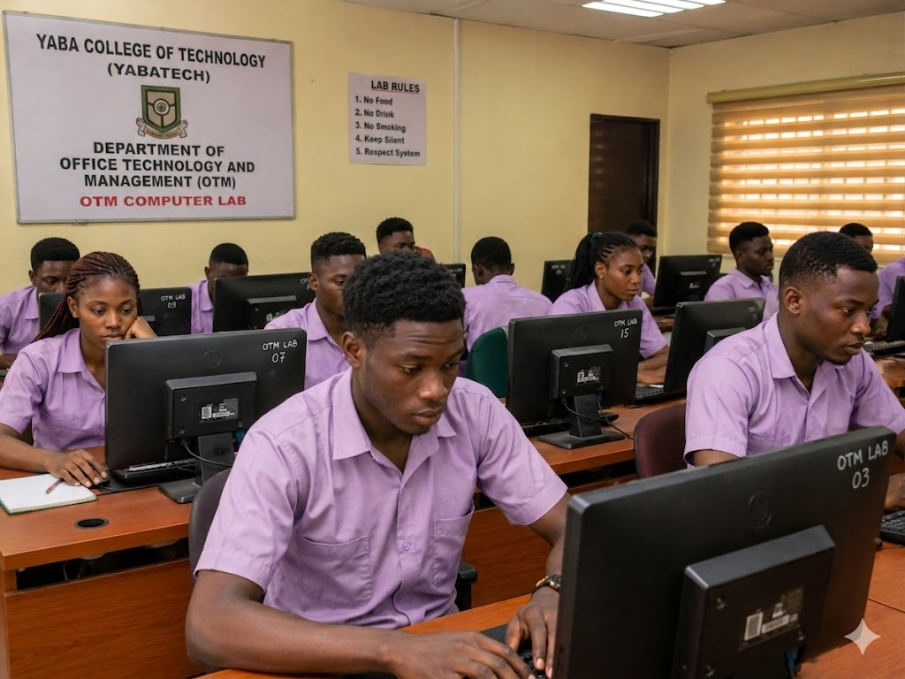

School of Management and Business Studies (SMBS)
Department of Office Technology & Management
Empowering the next generation of office administrators, managers, and technological innovators at Yaba College of Technology.
Our History & Story
Evolution of the OTM Department
The Department of Office Technology and Management (OTM) at Yaba College of Technology has a rich heritage of producing top-tier administrative professionals. Originally established to meet the growing demand for secretarial staff, the department has continuously evolved to integrate modern office technologies and digital management practices.
Today, under the School of Management and Business Studies (SMBS), we blend traditional administrative principles with cutting-edge technological tools, preparing our students for the dynamic modern workplace.
Our Vision
To be the leading center of excellence in Office Technology and Management education, fostering innovation and professional competence.
Our Mission
To equip students with advanced technological skills, managerial acumen, and ethical standards required to excel in global administrative roles.

From the HOD's Desk

Mr. Olomola Babatunde Taiwo
Head of Department, OTM
Our Esteemed Faculty

Mr. Adebayo O.
Senior Lecturer
Office Information Systems & Tech

Mrs. Stella E.
Lecturer I
Business Communication

Mr. Ibrahim K.
Lecturer II
Records Management & Administration
Courses Offered
Office Administration & Management
Courses designed to build strong leadership, record management, and administrative skills for the modern workplace.
- Records Management
- Office Practice and Management
- Business Communication
- Human Capital Management
Information & Communication Technology (ICT)
Practical and theoretical approaches to digital tools, software, and hardware used in modern offices.
- Information & Communication Tech I, II & III
- Web Design and Development
- Database Management Systems
- Advanced Desktop Publishing
Keyboarding & Shorthand
Core foundational skills for rapid data entry, transcription, and precise document production.
- Keyboarding I & II
- Shorthand I, II & III
- Word Processing
Student Executive Committee
NAOTEM Executive Committee

David O.
President

Sarah A.
Vice President

Michael B.
General Secretary

Grace T.
Public Relations Officer